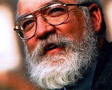

En un gesto extremadamente familiar, la joven mujer sacude sus manos y sopla el contenido en ellas. La gente comienza a aglomerarse mientras su rostro enrojece; está febril. Aparentemente, ha entrado en una racha de buena suerte. Antes de lanzar invoca a una deidad o alguna fuerza: “dame suerte, dame suerte” y microsegundos después de soltar los dados, su mano derecha se aferra automáticamente a la medalla de la virgen de la Altagracia que le regalara su abuela al nacer y que desde entonces cuelga de su cuello: “¡dame un siete, un siete!”, exige su cerebro del indiferente amuleto.
Es precisamente en la imagen de esos dados en el aire donde inician nuestras preguntas sobre la suerte; cuestiones que luego se ramifican por todos los ámbitos del quehacer humano, el planeta y el Cosmos. Daniel Dennett tiene una muy buena clasificación para estas ramificaciones en su libro La evolución de la libertad donde las divide en tres: física, diseño e intencional. Dentro de ellas, el mundo que nos abarca está representado en todo su complejo esplendor; la primera nos refiere al universo y las partículas subatómicas que lo componen, la segunda abarca los organismos multicelulares en el planeta y los mecanismos que los hacen funcionar y en la tercera nos encontramos nosotros, Homo sapiens, capaces no sólo de copiar y transmitir genes y memes sino también de dotar nuestras acciones con intención.
La división de Dennett nos permite organizar mejor la investigación sobre este complicado factor humano al que llamamos suerte. Azar, probabilidad, determinismo, incertidumbre, destino, estadísticas, libertad, albedrío, posibilidad, opción, compatibilismo, evitable y aleatorio son algunas de las palabras relevantes que surgen de su análisis; y eso sin examinar lo que la creatividad humana ha hecho con la superstición, un elemento íntegramente mezclado con las creencias irracionales y con nuestro deseo de ser profetas o de tener a alguien que lo sea por nosotros. No olvidemos que las personas invierten una cantidad significativa de su dinero en el intento de averiguar su futuro, de complacer a seres invisibles para que cuiden de su futuro o en la producción, compra y venta de amuletos y talismanes que los protejan de un mal futuro. Fracasos, enfermedades y muerte conforman la trinitaria de eso que deseamos evitar; son nuestros males, nuestros demonios, y cada cultura ha dotado a objetos, acciones y palabras con poderes protectores para vender la ilusión de que podemos alejar al mal agüero de nuestras vidas si nos aferramos a la magia.
¿Y será tan caprichosa la fortuna? De la misma forma en que la joven mujer cree que ha entrado en una racha de buena suerte, un joven no lejos de ella está perdiendo hasta los calzones. Pero tienen algo en común, no importa cuánto hayan ganado o perdido, los dos se aferran a una idea absurda: con cada acierto de los dados, ella confía más y más en su suerte; con cada desacierto, él confía en que su suerte tiene que cambiar y ninguno quiere perder la oportunidad.

“Contrario a lo que nuestros cerebros nos dicen, no existe una fuerza mística que dote al ganador de una racha de suerte, tampoco existe un sentido cósmico de justicia que asegure que la suerte del perdedor cambiará. Al universo no le importa si pierdes o ganas. El resultado de cada tirada de dados es enteramente independiente de su historia”, escribe en su ensayo Randomness el profesor de periodismo de la Universidad de Nueva York y editor del diario científico Science, Charles Seife.
Ciertamente, hemos concebido leyes que funcionan para los distintos dominios del Cosmos, en otras palabras, no intentes el popular experimento mental del gato de Schrödinger en nuestra realidad porque terminarás envenenando al minino.
En el mundo cuántico, por ejemplo, tres leyes se conocen sobre el azar: la primera nos dice que es real, la segunda establece que algunos eventos son imposibles de predecir y la tercera indica que eventos aleatorios se comportan de forma predecible en agregados, aún cuando no son predecibles de forma individual.
“Estas reglas establecen que incluso cuando un evento aleatorio puede ser completamente impredecible, una colección de eventos al azar es extremadamente predecible y mientras mayor el número de eventos, más predecibles los resultados. Es una poderosa herramienta matemática conocida como la ley de los números grandes, que junto al teorema del límite central que nos dice qué tan lejos del promedio estamos, provee al ser humano con métodos para convertir el comportamiento caótico de un sistema, en predicciones estables y precisas a largo plazo”, explica Seife.

Indudablemente, en el mundo que descubrimos a nivel subatómico parece reinar un caos de variables indeterminadas que permite que partículas aparezcan presuntamente de la nada; a pesar de estas extrañas contingencias, la termodinámica, por ejemplo, funciona perfectamente gracias a estas leyes absolutas del azar. En ese sentido, el filósofo y matemático libanés, Nassim Nicholas Taleb, afirma que es un error comparar el azar en el mundo humano con el azar estructurado de la física cuántica. Taleb lo llama la ‘falacia lúdica’ que “consiste en confundir los atributos de la incertidumbre en la realidad, con aquellos que se manejan en los exámenes y en los juegos. Por decir algo, caer en la falacia lúdica sería equiparar el riesgo que se toma en una decisión de vida, donde existen incontables variables desconocidas, con el que se toma al momento de apostar en un casino, donde todos los riesgos se encuentran controlados”, nos explica el autor del blog Cazando Elefantes, en un ensayo sobre el libro de Taleb, El cisne negro (http://cazandoelefantes.wordpress.com/2009/05/19/el-cisne-negro/).
Por eso muchos prefieren separar las leyes que rigen al ser humano de las que rigen a las partículas subatómicas. También se hace una distinción de las normas que presiden sobre los demás animales ya que ningún otro posee nuestro nivel cultural; la cultura humana es un poderoso mecanismo cuyo desarrollo nos separó para siempre de las otras especies. Y es allí donde nos atrapa el ambiguo concepto de libertad. Un concepto que ha plagado a la filosofía y la teología desde que el hombre alcanzó gnosis de su existencia: ¿qué tan libres somos?
Claro está, del dominio subatómico al mundo de los seres vivos hay un impactante salto. Especialmente cuando nos referimos, no a unidades genéticas ni a ratones o aves, sino a la reflexión sobre los humanos. Las explicaciones se complican debido esencialmente a tres variables: nuestro alto y complejo nivel de conciencia, la adquisición del lenguaje y a que, como dice Dennett, “la evolución nos ha convertido en informóvoros, seres epistémicamente hambrientos”.
Aún así, todavía no sabemos lo que realmente significa ser libres, ¿caminamos sobre un destino determinado o uno particularmente impredecible?; más aún, ¿dónde habita la suerte en ambos casos?
Si somos hijos de un destino fijo, del rígido determinismo que invocan muchos, entonces no importa lo que hagamos ni los amuletos que acumulemos o el conocimiento que apliquemos, nunca podremos cambiar el resultado de los eventos; si, por el contrario, somos el producto de un universo con un carácter indeterminado, como en el extraño indeterminismo cuántico, entonces sería casi imposible tomar decisiones preventivas a partir del cúmulo de conocimiento sobre las leyes bajo las cuales hemos evolucionado.
Pero tenemos otra alternativa. Para muchos evolucionistas, el determinismo no implica necesariamente una incompatibilidad con la libertad. Dennett sigue, en ese sentido, los pasos del filósofo David Hume al declararse compatibilista. El compatibilismo considera que debe haber una conexión causal entre nuestra voluntad y nuestras acciones, sostiene, además, que aunque tenemos opciones, el proceso por el que llegamos a ellas “está gobernado por una cadena de acontecimientos causales”. Este aspecto nos obliga a ser responsables de nuestra conducta, incluyendo “el dar crédito al bueno y culpar al malo”. Para Dennett, por ejemplo, la erosión de nuestros valores y civilizaciones puede surgir, precisamente, de que perdamos el interés de considerarnos “ciudadanos responsables” o que la gente ya no confíe en las instituciones que imparten estos premios y castigos.
Los dados en los casinos no están sujetos a la mismas leyes que los humanos, aunque millones pretendan que sí. Creer que estamos atados a un destino o que todos los aspectos del mundo equivalen a un lanzamiento de los dados, es obviar un sinnúmero de variables que se dan en el quehacer humano y que no tienen que ver con probabilidades cuánticas. El compatibilismo, en ese sentido, nos obliga a ser responsables de nuestras acciones, ofreciéndonos la libertad para actuar.
“El determinismo no es un problema. Lo que queremos es libertad y la libertad y el determinismo son completamente compatibles. De hecho, tenemos más libertad si el determinismo es cierto porque entonces habría menos azar. El carácter impredecible de la vida disminuye. Para tener libertad necesitas la capacidad de hacer juicios confiables sobre lo que va a ocurrir después y así poder basar tus acciones en ello. Un ejemplo es cuando la gente se preocupa por el determinismo genético, que realmente no acaban de comprender. Si el efecto de nuestros genes sobre las probabilidades de enfermedades en nuestra historia clínica fuera caótico o, en menor instancia, aleatorio, significaría que no habría nada que hacer. Nada. Sería como jugar a la ruleta rusa. Te sientas y esperas”, explicó Dennett en una entrevista para la revista Reason.

Pero los informóvoros continúan desinformados. Por eso la joven le reza a una virgen para que su suerte no cambie, mientras el chico le implora a otra deidad por un cambio en la suya; los dados y el universo, por su parte, son indiferentes a ambos deseos y el resultado de la tirada es completamente impredecible a menos que deseemos contabilizar el promedio de un millón de lanzamientos. De la misma forma, no podemos predecir con certeza absoluta que nos irá bien en un examen o reunión, existen variables en el futuro que no podemos predecir con exactitud y esta incertidumbre genera nerviosismo y vulnerabilidad. Aún cuando la experiencia y la teoría de los grandes números nos dicen que las probabilidades de tener éxito son altas si nos preparamos, sabemos muy bien que hay variables no determinadas que pueden causarnos problemas. Taleb llama a esos eventos en su teoría económica cisnes negros; sucesos tan improbables como impredecibles. Es lo que no podemos ver venir pero que, de alguna forma u otra, terminan transformando nuestro mundo.
Asimismo, el carácter determinista de la biología y de las leyes de la realidad humana permite que el conocimiento científico pueda usarse como una herramienta de prevención. Gracias a esa sed por conocimiento, a que somos informóvoros, hoy podemos evitar grandes desastres al estudiar y comprender mejor las leyes que producen orden dentro del caos. No obstante, si le preguntas a un programador de unos y ceros mantendrá fehacientemente que debajo de todo ese determinismo biológico existe una naturaleza completamente impredecible.

“Si pudiéramos predecir nuestras acciones podríamos deliberadamente violar nuestras predicciones lo que significa que al final las predicciones eran incorrectas”, asegura en su ensayo El mundo es impredecible, Rudy Rucker, matemático, autor y científico computacional quien añade, “el mundo puede ser simultáneamente determinista e impredecible”.
Así que poco importa qué tanto le temamos a la incertidumbre que enfrentan nuestros pasos en este corto tránsito sobre el planeta, a pesar de la imposibilidad de controlar esos cisnes negros que nos acechan por doquier, somos responsables de nuestra suerte y, en menor o mayor grado, de la suerte de los demás. La idea es buscar la forma de estar preparados para lo impredecible mientras navegamos por lo previsible de nuestro diario vivir. Al final, el filósofo Séneca lo resumió elegantemente cuando expresó que la suerte es lo que ocurre cuando la preparación se encuentra con la oportunidad.
La importancia del ‘ciudadano responsable’ en la suerte de todos
Seres benegoístas
Job es un conocido prototipo de mala suerte. La vida le lanzó aterradores cisnes negros a este fiel creyente y aunque la historia bíblica manifiesta que todos sus fracasos fueron pruebas impartidas por su perturbado dios, muchos cristianos modernos interpretan su tragedia como una forma de perseverar ante lo inesperado. Efectivamente, a través del análisis de todas esas inevitables catástrofes y tragedias que azotan a la humanidad, es factible conjeturar que la idea de que el futuro es incierto la aprendimos rápidamente. Una de las tantas consecuencias de este hecho ha sido la producción de talismanes, amuletos, ritos y dioses como una forma de contrarrestar el desconocido porvenir. Esos fetiches nos confortan y permiten que nos sintamos confiados y protegidos.

Es indudable que los amuletos y talismanes son antiguos compañeros de los humanos y hoy los encontramos en casi, sino en todas, las religiones y creencias. Una particularidad del ser humano es creer a pesar de no tener pruebas y la superstición siempre ha enfrentado este ineludible hecho: milenios y milenios de ritos y dioses y ni una pizca de evidencia de que funcione. Amuletos o no, la gente fracasa y espantosos eventos ocurren a individuos buenos y a ciudadanos responsables. Es uno de los grandes dilemas que afronta el creyente: puedes seguir al pie de la letra la palabra de tus deidades, los ritos supersticiosos, la receta de la bruja o la interpretación del Tarot, y como quiera puede que te salga todo mal, aceleraste cuando la luz pasó a verde pero un irresponsable se pasó en rojo y te llevó por delante. Es ahí donde debemos hacernos responsables de nuestro comportamiento y de las decisiones que tomamos; considerar, después de todo, que las acciones de un ciudadano irresponsable se convierten en episodios de “mala suerte” para todos.
Pero en vez de tomar el control y hacernos responsables, colgamos cruces, rosarios, medallones y budas. El político asiste solemnemente a su iglesia después de iniciar alguna innecesaria guerra mientras el pandillero besa la medalla de su santo favorito luego de enfundarse la pistola. Posteriormente, cuando nada puede ya salvarnos, nos conforta la ilusión de que todo está en los planes misteriosos de algún dios o culpamos al destino de nuestra mala suerte.
El determinismo de Hume intenta poner la responsabilidad sobre el individuo, sobre el actor. Su aplicación debe ayudarnos a decidir de forma informada, aceptar que siempre estará la posibilidad de que algo impredecible nos haga fracasar o nos ayude a alcanzar nuestros deseos, pero no podemos esperar que lleguen esas excepciones como si la vida fuera un juego de lotería, dejar nuestras acciones al azar es no valorar el poder que tiene la especie.
Dennet advierte, por su parte, no confundir determinismo con fatalismo. Este último es la idea de que algo malo va a ocurrir no importa lo que hagas al respecto mientras que el determinismo afirma que lo que ocurra depende de lo que hagas, que lo que hagas depende de lo que sabes, que lo que sabes depende de lo que te ha causado saber, y así sucesivamente. Si nos hacemos responsables de nuestros actos estamos comportándonos como los primates morales que deberíamos ser.
“La moral en la especie surge con la evolución del benegoísmo, que es un concepto intermedio entre el egoísmo puro y el altruismo puro, dos elementos que tradicionalmente la moral ha enfrentado. El egoísta y el santo no existen en sus formas puras, las personas promedio somos, más bien, benegoístas, es decir, somos buenos y egoístas o caracterizadas por un buen egoísmo”, explica Dennett.
De esta forma, la buena o la mala suerte depende en gran parte de que todos apliquemos este buen egoísmo en nuestras acciones.
En ese sentido, es posible crear una enorme porción de nuestra suerte pero no a través de atajos fantásticos. No tiene que ver con las velas que enciendas en tu iglesia ni la camiseta que usas cada vez que juega tu equipo, es más difícil y mucho más costoso. La fórmula, entre otras cosas, aconseja y anima a responsabilizarte de las consecuencias que producen tus actos, aplicar prácticas de buen egoísmo que beneficien al grupo e intentar mantenerte bien informado respecto a tus opciones. Así, poco a poco, iremos mejorando nuestra suerte y la de todos.
Finalmente, en nuestro paso por la vida no olvidemos el sabio consejo del comediante australiano Jeff Jefferies, que puede muy bien ser el robusto cimiento sobre el que construimos todo lo demás: “intenta no ser un cabrón”.
Nota al margen: Mil gracias a todas esas personas en Facebook que se tomaron el tiempo para hacer comentarios respecto a la suerte. ¡Sus ideas me ayudaron mucho!
Volver al índice de la Lupa Herética
© 2008-2021 Glenys Álvarez y Sin Dioses. Prohibida la reproducción con fines comerciales.
Comentarios
Comments powered by Disqus